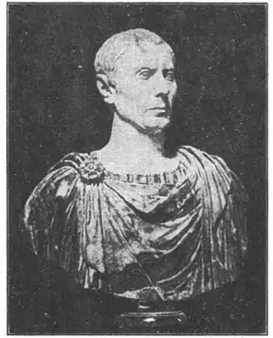
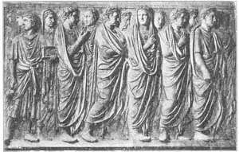

42
BUSTS AND RELIEFS
半身像和浮雕

AS your mother or your father or your teacher ever told you not to say “bust”? “If he gets any fatter, he’ll bust!” is very poor English. I agree with your mother or your father or your teacher. What you should say is burst .
But now I’m going to tell you how you can use the word “bust” so your mother and your father and your teacher will like to hear you use it. In bad English, “bust” means "burst." In good English, “bust” means a piece of sculpture showing the upper part of a person—sometimes just the head and neck and sometimes the head, neck, shoulders, and chest. A bust that is made to look like one particular person so that you can say when you see it, “Why that looks just like Mr. Brown,” or “just like Alice Jones,” or“just like Tommy Smith,” is called a portrait bust.
The ancient Egyptians made some very good portrait busts, but the people who made them best were the ancient Romans. The old Roman busts are so lifelike that they look like real people you might see walking down the street to-day. The Greeks put Greek noses on most of their statues even though many Greeks didn’t have Greek noses. But the Romans liked to make their busts just like the real person. If a man had a crooked nose or a double chin, the sculptor made that man’s bust with a crooked nose or double chin. If the man had a worried look, the sculptor made the bust with the worried look.

No.42-1 JULIUS CÆSAR（《尤利乌斯·恺撒》）
Courtesy of Pratt Institute
Each Roman family that could afford it had busts made of all the members of the family. These busts were handed down in the family so that an old family had a great many busts of its ancestors around the house. Whenever there was a death in the family, all the family portrait busts were carried down the street in the funeral procession. If you had watched one of those processions, you could have seen, perhaps, how much a grandson looked like the bust of his grandfather which he was carrying.
Each Roman emperor had hundreds of busts made of himself to be sent to all the important cities in the Roman Empire. Here is a bust of Julius Cæsar. Does he look like any one you know? Now if you want to use the word bust , go ahead.
Except for the busts, the Romans weren’t very good at making statues in the round. So when they conquered Greece they brought back to Rome all the famous Greek statues they could find. They brought back Greek sculptors, too, and made them carve statues in Rome. Many of the statues made in Rome were not original but were copies of famous Greek statues. It’s lucky for us the copies were made, because so many of the great Greek statues were lost that if we hadn’t been able to dig up Roman copies of them we shouldn’t know at all what they were like. You remember Myron’s Discus Thrower? The statue that Myron himself made disappeared and has never been found, but several Roman copies of it were made and so we know what it was like.

No.42-2 RELIEF FROM THE ALTAR OF PEACE（《和平祭坛浮雕》）
Although the Romans weren’t so good as the Greeks in making statues in the round, they did make some excellent bas reliefs. All boys like the reliefs showing the campaigns of the Emperor Trajan. They show the Roman soldiers marching, camping, fighting, taking a city, capturing prisoners, and carrying off the spoils of war. Trajan’s campaign was carved on a marble column and the sculptured band winds like a corkscrew round and round the column from the bottom to the top. The column is still standing in Rome and is called Trajan’s Column.
Another famous relief is carved on the Altar of the Peace of Augustus which the Roman Senate ordered erected in 13 B.c. when the Emperor Augustus came back from putting down revolts in the western part of the Roman Empire.
If any one should ask you what kind of sculpture the Romans did best, just tell them,“Reliefs and busts.”
【中文阅读】
爸爸、妈妈或老师有没有说不要用“bust”来指某人长胖了呢？用“bust”来指人发胖，是你英语蹩脚，用词不当。我同意父母和老师的提醒。你应该说burst（发胖）。
现在我来介绍一下如何使用“bust”这个词，而且父母和老师都乐意听我们使用。在不规范的英语中“bust”就是“burst”的意思，常被混用；而在规范英语中，“bust”是“半身像”的意思。所谓半身像，有时候仅指脑袋和脖子，有时候却把肩膀和胸部都算在内。而雕刻的半身像看上去就像某某某，所以我们看到时就会说：“为什么这像看上去像布朗先生？”或说：“这真像琼斯·爱丽丝。”或说：“太像汤米·斯密斯了。”半身像也叫“半身雕像”。
古埃及人刻过一些很好的半身雕像，但是刻得最好的还是古罗马人。古罗马人的半身雕像刻得非常逼真，就像我们走在大街上看见的路人。古希腊人刻像时，喜欢给人物安上希腊鼻，尽管许多希腊人并没长着希腊鼻。但古罗马人却喜欢把半身像刻得跟真人一样。如果某人长着歪鼻子或双下巴，古罗马雕刻家就会照样刻下歪鼻子或双下巴。如果某人愁容满面，雕刻家照样把他刻成愁容满面。
在罗马，凡有支付能力的家庭都会给家庭成员刻一座半身像。这些半身像会代代相传，所以一个古老家族里往往会有许多祖先们的半身像。一旦某家有人去世了，这家会在沿街出殡时带上全部的家族半身雕像。如果真碰到这样一支殡葬队，我们可能会惊叹孙子跟他手里捧的祖父半身像有多么相像。
每一位罗马君主都刻有几百座自身的半身像，分送到罗马帝国各大城重镇。下图是尤利乌斯·恺撒的半身像。你觉得他看上去像你认识的哪个人吗？这时候使用bust就对了。
除了半身像外，罗马人并不擅长在圆柱上雕像。所以，罗马人在征服希腊后，从希腊带回了所能找到的所有著名希腊雕像。他们还将希腊雕刻家带回国内，让他们在罗马刻像。但在罗马刻的雕像许多并非原创，而是希腊名雕的摹制品。由于许多优 秀的希腊雕像已经丢失，所以对我们来说，能拥有这些希腊雕像的摹制品也是幸事一桩。我们要是没有挖出这些罗马的摹制品，也就没法知道这些雕像的原样。你还记得米隆的《掷铁饼者》吗？米隆的原作早已丢失，无法找到，但通过罗马的几件摹制品，我们就能知道原作的风采。
尽管罗马人不像希腊人那样擅长在圆柱上雕像，但他们也的确刻过几件很棒的浅浮雕。男孩子们都很喜欢看那展现图拉真大帝东征的浮雕。这些浮雕使我们看到了罗马士兵们行军、扎营、作战、攻克城镇、追捕囚犯以及缴获战利品的场景。图拉真大帝东征的场景刻在一个大理石圆柱上，而群像就像螺丝一样沿着柱身从底绕到顶。如今，这根圆柱依然屹立在罗马，称作“图拉真记功柱”。
另一件著名的浮雕要算奥古斯都和平祭坛浮雕。公元前13年，当奥古斯都大帝平定罗马帝国西部叛乱后凯旋时，元老院下令建造了这座祭坛。
如果有人问你罗马人最擅长刻哪种雕像，你就回答：“浮雕和半身像。”